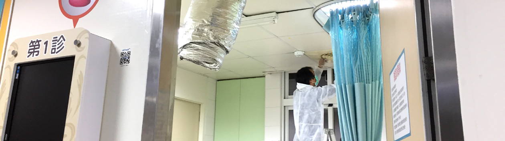
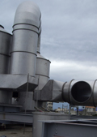
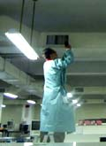

室內空氣品質
我們一生有70%以上時間是待在室內，可想而知室內空氣品質是多重。
1.何謂IAQ

IAQ室內空氣品質


大樓常見室內空氣品質問題(IAQ室內空氣品質管理改善要點
（一）公共場所室內空間人員使用密度過高、空調設備設置不當及送風量不足等問題，造成通風換氣不良導致二氧化碳（CO2）偏高，此時只需將換氣排風設備打開，就可容易達標。
（二）由於國內室內空間大多過度裝修，倘其裝修材料、塗料等具易揮發性有機溶劑，加以建築通風換氣功能不良，將導致室內揮發性污染物質濃度增高，特別是甲醛 (HCHO)與揮發性有機物（TVOC）之濃度，以本司經驗，國內裝潢後甲醛超標比率大約為70%以上，其主要甲醛來源為木材，而是否超標需要有專業儀器測甲醛，才能解是否需要除甲醛。
(三）台灣地處亞熱帶海島型氣候，年平均相對濕度多達80％以上，因此外在環境形成易滋生生物性污染物之溫床，有生物性污染物（細菌、真菌等）濃度普遍偏高的問題，另外在秋冬當氣溫低於25度以下，是流感病毒高峰，2020武漢肺炎冠狀病毒就市在2019.11時起開始大量傳播。
（四）粉塵問題，PM2.5造成上呼吸到疾病，主因是空調系統太久沒清理保養，傳統保養都只是做表面之清潔，未處理到內部管道之灰塵所致。